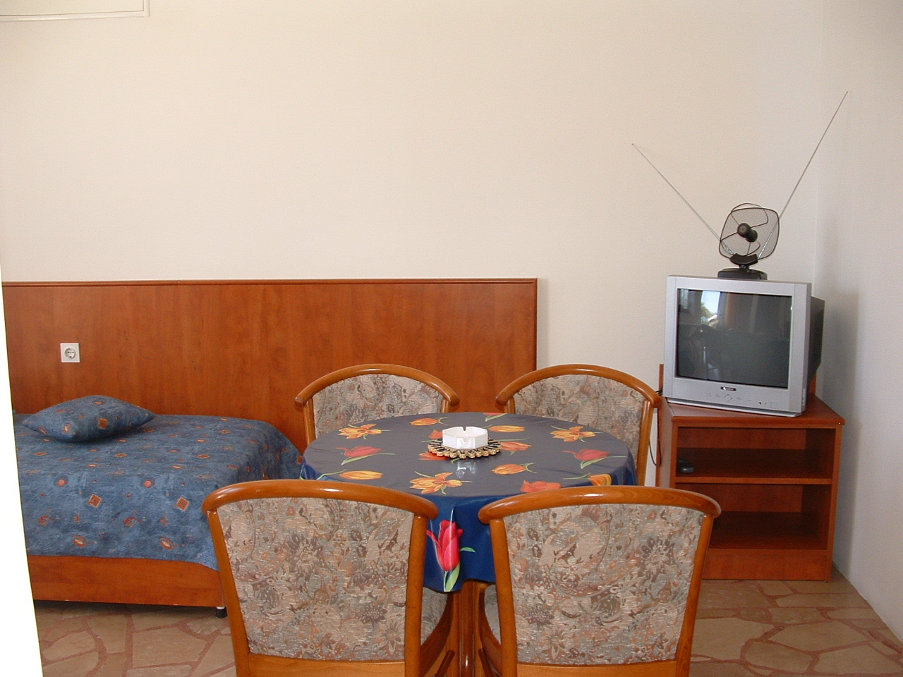
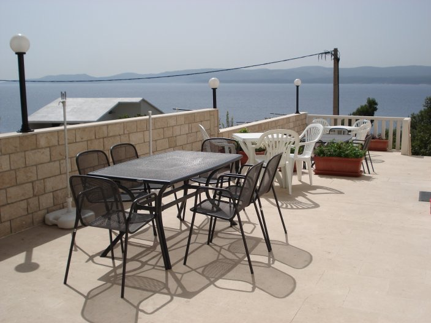
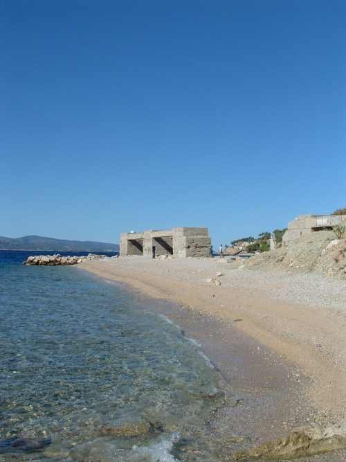
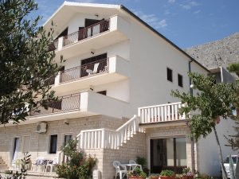
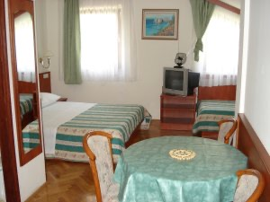
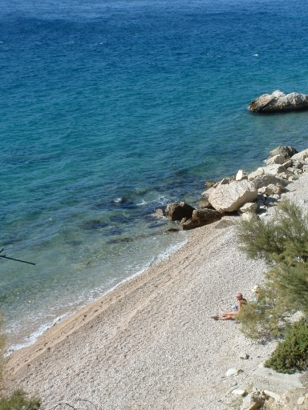
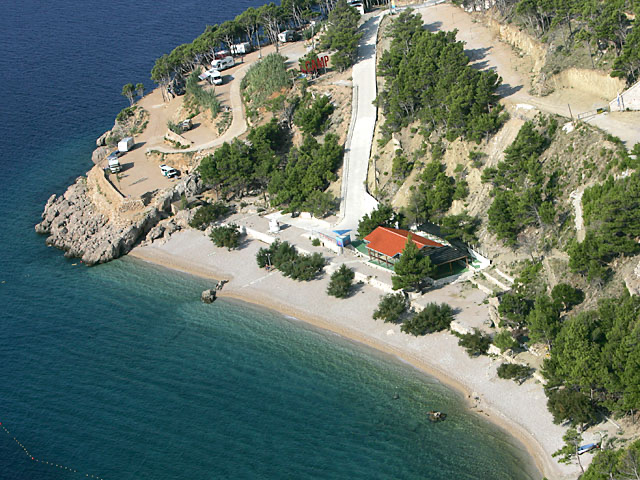
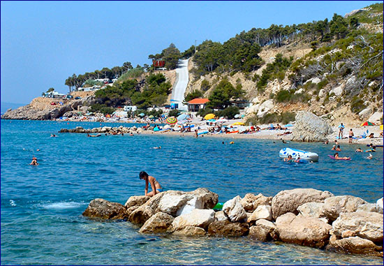

Apartman A1
Prizemlje, 48 m², dvije spavaće prostorije i ležaj u dnevnom boravku.
Sedam apartmana obitelji Mladina u mirnom naselju Ivašnjak, na pola puta između Splita i Makarske. Zajednička terasa s pogledom na more, roštilj, parking uz kuću i šljunčana plaža do koje se stiže pješice za minutu.

Apartmani Mladina smješteni su u Lokvi Rogoznici, u naselju Ivašnjak koje se odlikuje nizom prekrasnih plaža. Kuća je sagrađena 1999. godine, a apartmani su moderno uređeni.
Mir i tišina mjesta te položaj kuće pružaju vama i vašoj obitelji odmor kakav vam treba nakon duge radne godine. U neposrednoj blizini su dućan, pošta, mjenjačnica, bar i restorani. Iz Lokve Rogoznice lako ćete obići i druge bisere Jadrana: Omiš, Split, Trogir, Brač, Hvar ili Imotski.
Obitelj Mladina



Svaki apartman ima vlastitu kuhinju, kupaonicu, klima uređaj i satelitsku televiziju.

Prizemlje, 48 m², dvije spavaće prostorije i ležaj u dnevnom boravku.

Na 1., 2. i 3. katu, 33 m², s vlastitim balkonom prema moru.

1. i 2. kat, 31 m², dvije prostorije, pogled na zelenilo.

31 m², bračni i jednostruki ležaj u istoj prostoriji.
Naselje Ivašnjak ima niz šljunčanih plaža, a najbliža je samo 60 m od kuće. Lokva Rogoznica je u srcu Dalmacije, pa su izleti na Brač, Hvar, u Split ili kanjon Cetine blizu.



Šljunčana plaža udaljena je oko 60 m. Do plaže ne morate prelaziti cestu jer ispod nje vodi mali pješački tunel.
Da. Do kuće se dolazi automobilom, a parkirno mjesto je osigurano uz kuću.
Svaki apartman ima vlastitu kuhinju, kupaonicu s tušem i WC-om, klima uređaj i satelitsku televiziju. U kući je dostupan Wi-Fi, a gosti koriste zajedničku terasu s pogledom na more i roštiljem.
Za potvrdu rezervacije uplaćuje se 40 % ukupnog iznosa na račun. Kreditne kartice ne primamo.
Da. Autobusi na liniji Split – Omiš – Makarska staju u Lokvi Rogoznici (Ivašnjak). Autobusna stanica je oko 80 m od kuće. Upute su na stranici Kako doći.